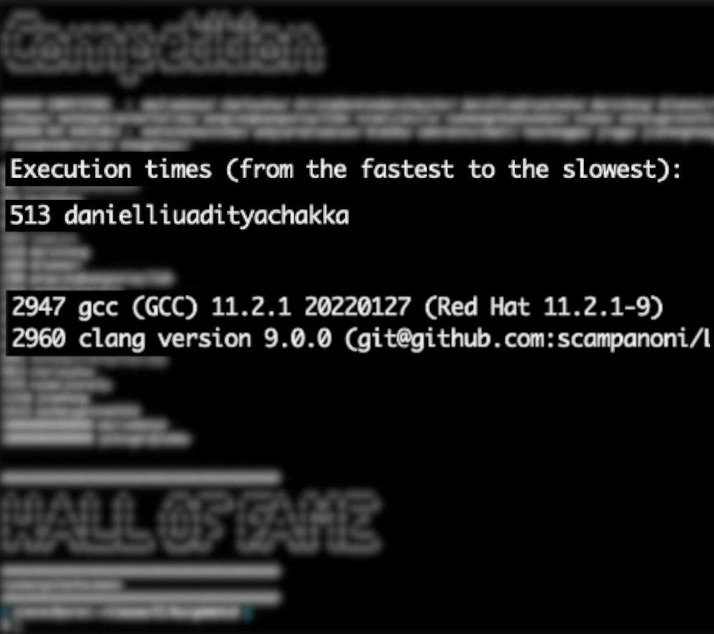
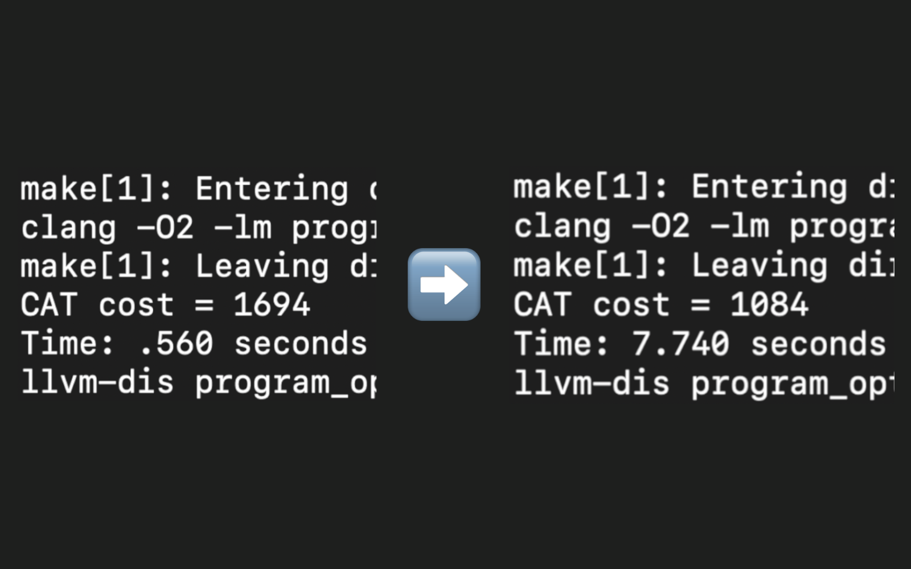

Home
About
Projects
Hi there!
I'm
Daniel.
I'm
currently
a
software engineer.
About Me
I currently work at Google as a software engineer. Previously, I worked on ML compilers as an engineer at MathWorks. In my free time, I enjoy working on personal projects, contributing to open source, and wasting time by tinkering with my
configs
. When I'm not coding, you'll probably find me on a run.
Contact
daniel-a-liu at outlook dot com
GitHub
LinkedIn
Education
Northwestern University
Evanston, IL
B.S. Computer Science, 2025
Concentration in Software Engineering & Programming Languages
Skills
Programming Languages:
C++, Go, Rust, Zig
Frameworks/Libraries:
MLIR, LLVM
Experience
Software Engineer
Google | Mountain View, CA
Apr. 2026 – Present
YouTube infra
Associate Engineer in the Engineering Development Program
MathWorks | Natick, MA
May 2025 – Mar. 2026
ML compilers
Software Engineer Intern
CDK Global | Hoffman Estates, IL
Jun. 2024 – Aug. 2024
Full-stack dev
Projects

Almost-C Compiler
An end-to-end compiler that lowers a C-like language into an IR and then generates x86-64 assembly code, built from scratch in C++. I'm also working on a reimplementation of the compiler in Rust.

CAT LLVM Pass
A custom LLVM pass written in C++ that optimizes programs using a toy language that supports basic arithmetic operations. Implements optimizations such as constant propagation, constant folding, dead-code elimination, etc.
Strava Wx
A serverless app that automatically fetches weather data from an API and adds it to new outdoor Strava activities. Written in Go and deployed on AWS using Lambda, DynamoDB, and SQS.